Rows imported from solution_ready_by_special with answer and rationale.
A06-0001A06-Q0001solution_ready
173. A 6-year-old boy is brought to the emergency room with a 3-h history of fever to 39.5 C and sore throat. The child appears alert but anxious and toxic. He has mild inspiratory stridor and is drooling.
Which of the following should be performed immediately?
crop
ถูกต้อง
Toxic child with drooling and inspiratory stridor suggests epiglottitis; airway preparation is the immediate priority.
ยังไม่ถูก
B. Examine the throat and obtain a culture
ยังไม่ถูก
C. Admit the child and place him in a mist tent
ยังไม่ถูก
D. Obtain an arterial blood gas and start an IV line
ยังไม่ถูก
E. Order a chest x-ray and lateral view of the neck
Toxic child with drooling and inspiratory stridor suggests epiglottitis; airway preparation is the immediate priority.
A06-0002A06-Q0005solution_ready
183. A 4-year-old boy from a neighbor country presents with acute onset of severe problems breathing. For the past 3 days, he has had a low-grade fever, loss of appetite, and a sore throat. Physical examination reveals enlarged cervical lymph nodes and a gray-white, inflammatory exudate that is adherent to his larynx (pseudomembrane). A special stain on a throat culture reveals metachromatic granules in bacilli that are arranged in a "Chinese character" pattern.
In the child, which one of the following portions of the larynx is lined by nonkeratinized stratified squamous mucosa?
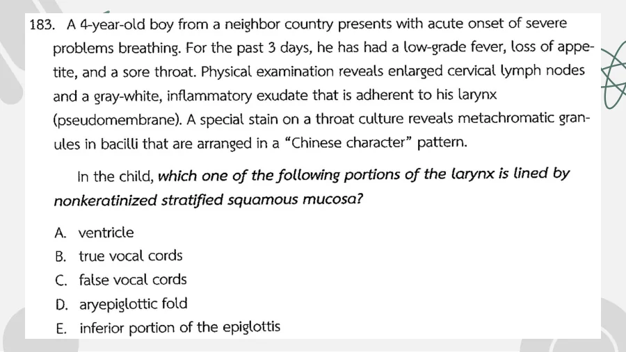
crop
ยังไม่ถูก
A. ventricle
ถูกต้อง
The true vocal cords are lined by nonkeratinized stratified squamous epithelium.
The true vocal cords are lined by nonkeratinized stratified squamous epithelium.
A06-0003A06-Q0009solution_ready
194. A 32-year-old woman presents with the sudden onset of feeling that "the room is spinning" when she stands up. This feeling is associated with nausea and vomiting. She states that her symptoms began shortly after she recovered from an upper respiratory infection. Physical examination reveals jerky eye movements when she is sitting. These movements involve both eyes and are characterized by slow eye movements to the left that are followed by rapid eye movements to the right. These movements quit if she fixes her gaze on an object.
The signs and symptoms in this individual are most likely due to a lesion involving which of the following?
crop
ยังไม่ถูก
A. brain stem
ยังไม่ถูก
B. cerebellum
ถูกต้อง
Peripheral vestibular nystagmus has the slow phase toward the injured side and fast phase away from it; slow left/fast right localizes left.
Prehospital intubation of suspected epiglottitis should be avoided unless airway failure is imminent.
A06-0005A06-Q0017solution_ready
79. A 3-year-old child presented to the emergency room with thin, gray pus dripping from her left nostril. Her foster mother stated that the child "always had a cold" for as long as she knew her during the past year. Prior treatment with oral antibiotics failed to relieve the symptoms.
What was the most likely source of the chronic discharge?
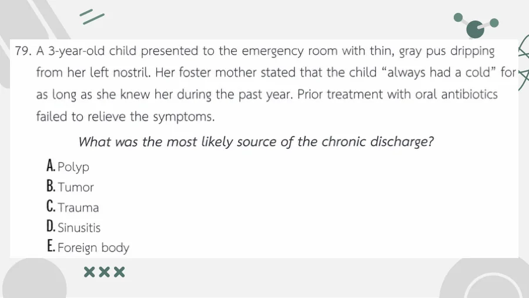
crop
ยังไม่ถูก
A. Polyp
ยังไม่ถูก
B. Tumor
ยังไม่ถูก
C. Trauma
ยังไม่ถูก
D. Sinusitis
ถูกต้อง
Chronic unilateral foul nasal discharge in a child is nasal foreign body until proven otherwise.
Chronic unilateral foul nasal discharge in a child is nasal foreign body until proven otherwise.
A06-0006A06-Q0020solution_ready
82. A 65-year-old man came to ED due to developing stridor for 1 day. His wife told that he had fever and sore throat which were not improved after treatment of amoxicillin for 3 days. On physical examination, he had febrile and gray-white patch on both tonsils and posterior pharynx. He also had stridor with mild dyspnea. O2 sat was 98%.
What is the next step management in this patient after throat swab culture and antibiotic treatment
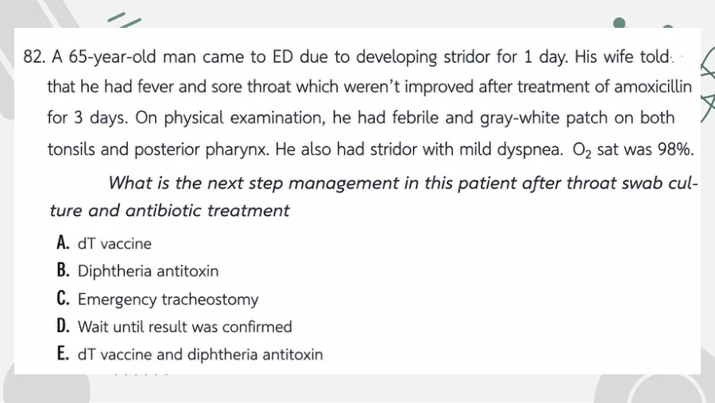
crop
ยังไม่ถูก
A. dT vaccine
ถูกต้อง
Suspected respiratory diphtheria needs early antitoxin in addition to antibiotics; do not wait for culture confirmation.
Suspected respiratory diphtheria needs early antitoxin in addition to antibiotics; do not wait for culture confirmation.
A06-0007A06-Q0025solution_ready
106. หญิงอายุ 28 ปี มีไข้ เจ็บคอ ได้รับยาปฏิชีวนะกินมา 7 วัน มาที่ห้องฉุกเฉินด้วยอาการกลืนลำบากและเจ็บคอมากขึ้น ตรวจร่างกายพบ BP 130/65 mmHg, HR 95 beats/min, BT 39 C, RR 16 breaths/minute, oxygen saturation 99%, ตรวจพบ fluctuant mass on the right side of the soft palate with deviation of the uvula
Peritonsillar abscess with uvular deviation requires drainage plus antibiotics; needle aspiration is an appropriate next step.
A06-0008A06-Q0032solution_ready
141. A 6 year old, fully immunized boy is brought to the emergency room with a 3 hour of fever to 39.5 C and sore throat. The child appears alert, but anxious and toxic. He has mild inspiratory stridor and drooling. He is sitting on the examination table leaning forward with his neck extended.
Which of the following is the most appropriate immediate management of the patient
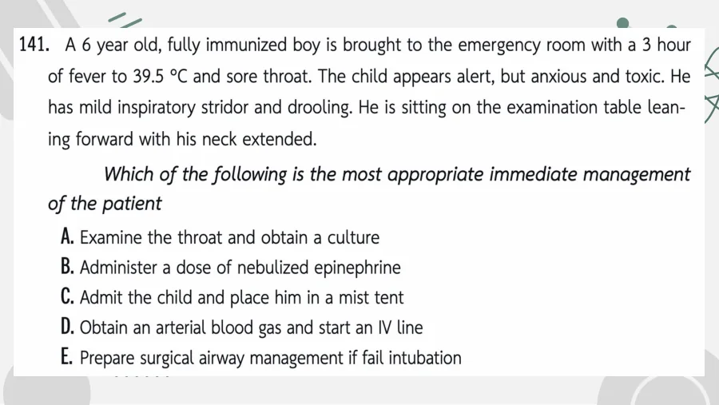
crop
ยังไม่ถูก
A. Examine the throat and obtain a culture
ยังไม่ถูก
B. Administer a dose of nebulized epinephrine
ยังไม่ถูก
C. Admit the child and place him in a mist tent
ยังไม่ถูก
D. Obtain an arterial blood gas and start an IV line
ถูกต้อง
The presentation is epiglottitis; airway control should be planned with backup surgical airway support.
The reviewed dental image shows an uncomplicated crown fracture involving enamel and dentin without visible pulp exposure, consistent with Ellis class II.
The reviewed dental image shows an uncomplicated crown fracture involving enamel and dentin without visible pulp exposure, consistent with Ellis class II.
A06-0010A06-Q0040solution_ready
154. The usual causative organism of retropharyngeal abscesses in Pediatrics is:
crop
ยังไม่ถูก
A. H. influenzae
ถูกต้อง
Pediatric retropharyngeal abscess is commonly associated with streptococci and oral flora; among the listed single organisms, GAS is best.
Pediatric retropharyngeal abscess is commonly associated with streptococci and oral flora; among the listed single organisms, GAS is best.
A06-0011A06-Q0042solution_ready
35. A 5 year child presents with stridor and respiratory distress. He had a history of progressively worsening fever, sore throat, and dysphagia for 3 days. X-ray shows as picture. What is the diagnosis?
crop
ยังไม่ถูก
A. Acute epiglottitis
ยังไม่ถูก
B. Acute asthmatic attack
ยังไม่ถูก
C. Foreign body aspiration
ถูกต้อง
Fever, sore throat, dysphagia, stridor, and lateral-neck film context fit retropharyngeal abscess.
Fever, sore throat, dysphagia, stridor, and lateral-neck film context fit retropharyngeal abscess.
A06-0012A06-Q0046solution_ready
118. ผู้ป่วยชายอายุ 32 ปี มาห้องฉุกเฉินด้วยอาการคอบวม มีประวัติมีไข้ 3 วันก่อนมาไม่ผ่าตัดฝีหนองที่ข้างขวา หลังผ่าตัดเสร็จว่าคางซ้ายบวม เจ็บ กลืนลำบาก อ้าปากไม่สุด มีไข้สูง ตรวจร่างกายพบ BT 39 C, HR 90/min, BP 140/90 mmHg, RR 25/min, O2 sat room air 96%. HEENT: edema of entire upper neck and left chin, floor of mouth swelling, cannot see tonsil and uvular due to elevate tongue. Lung: no stridor or wheezing, dyspnia.
Ludwig angina/deep neck infection with floor-of-mouth swelling and trismus is best managed with awake fiberoptic airway control.
A06-0013A06-Q0048solution_ready
131. A 78-year-old hypertensive man is brought to the emergent department with recent onset nosebleeds. His vital 161/85 mmHg. HR 104 bpm. RR 20/min and T 37.1 C.
What is the most likely source of bleeding?
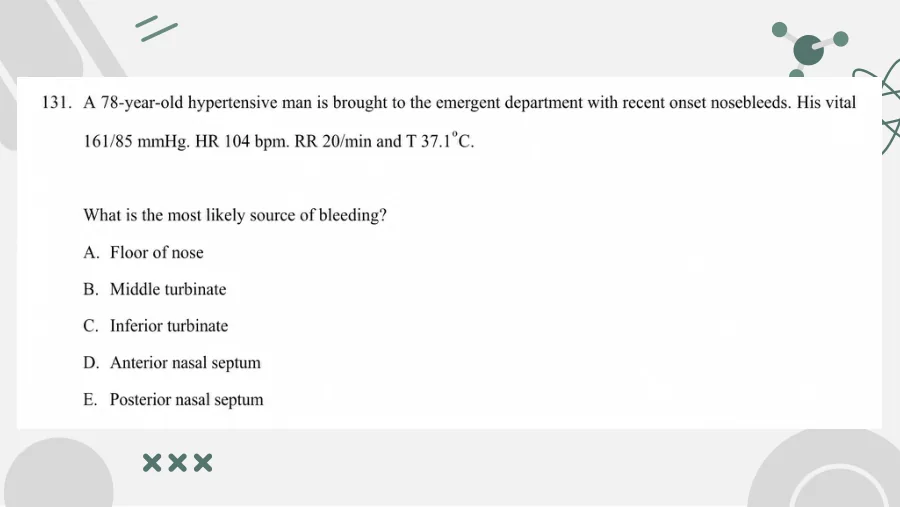
crop
ยังไม่ถูก
A. Floor of nose
ยังไม่ถูก
B. Middle turbinate
ยังไม่ถูก
C. Inferior turbinate
ถูกต้อง
Most epistaxis arises from Kiesselbach plexus at the anterior nasal septum.
The reviewed lateral neck image shows a radiopaque foreign body in the pharyngeal/upper-airway region, and the patient is nontoxic without airway obstruction.
A06-0021A06-Q0068solution_ready
11. A 32-year-old male presented with complaint of painless swelling on the right ear growing for the last 2 days. He had no significant previous medical history or trauma to the ear. The patient stated that he had recently been using his mobile phone up to 4 hours per day, listening with his right ear. On examination, a slightly compressible swelling affecting the concha, limited to an area of approximately 10 x 5 mm was present. What is your management?
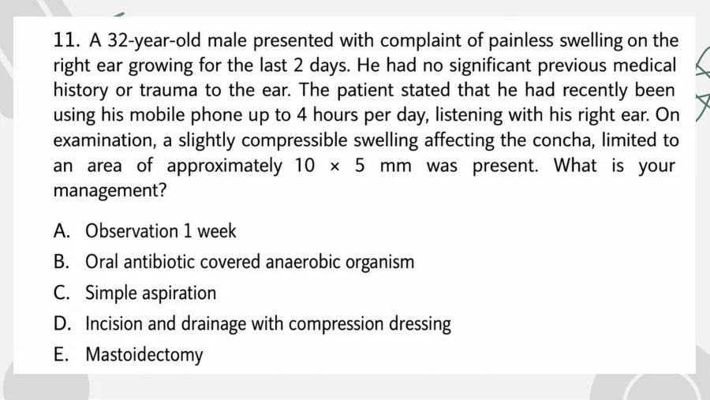
crop
ยังไม่ถูก
A. Observation 1 week
ยังไม่ถูก
B. Oral antibiotic covered anaerobic organism
ถูกต้อง
Small painless compressible conchal swelling is consistent with auricular pseudocyst/seroma; aspiration is appropriate first management.
ยังไม่ถูก
D. Incision and drainage with compression dressing
Muffled voice and anterior neck tenderness with possible supraglottic disease are best evaluated by flexible laryngoscopy when stable.
A06-0023A06-Q0073solution_ready
128 A 11 year olds boy presented to ED with left ear pain for the past 2 weeks. He gave a history of playing football with his friends and was hit by a ball at left ear. He has been in pain since then. There was a severe pain on the anterior pinna when touching. PE shown. What is the appropriate management?
A: Aspiration B: Incision and drainage C: Consult ENT for surgical drainage D: Cold compression c pain control E: Hot compression c pain control c oral ATB
An auricular hematoma/pinna collection present for two weeks may be organized and needs ENT/surgical drainage.
A06-0024A06-Q0075solution_ready
130 หญิง 60 ปี มาด้วย Right otalgia with otorrhea 2 wk กิน oral ATB 1 wk ไม่ดีขึ้น PE: edema with erythema at right EAC with granulation tissue with trismus มีรูป ถามเชื้ออะไร
Malignant otitis externa with granulation tissue/trismus is classically due to Pseudomonas.
A06-0025A06-Q0077solution_ready
135. Girl 4 yr, history of pharyngitis 2 days. She presented with drooling for 1 day, she has neck swelling, fever, trismus, odynophagia, PE: BT 39 C, BP 140/80 mmHg, RR 18/min, PR 112 bpm HEENT shown hyperextend, stiffness, torticollis, injected pharynx, swelling posterior oropharynx. Lung clear. What is the most likely diagnosis?
A) Diphtheria B) Ludwig angina C) Bacterial tracheitis D) Peritonsillar abscess E) Retropharyngeal abscess
Drooling, fever, trismus, neck stiffness/torticollis, and posterior oropharyngeal swelling fit retropharyngeal abscess.
A06-0026A06-Q0080solution_ready
146. 12 years old boy, fever, fatigue, sore throat for 2 days, V/S T 38.8 C, P 98, RR 18, BP 120/80, good consciousness, HEENT - mild injected both tonsils with exudates, diffuse cervical lymphadenopathy, H&L - WNL, Abd - soft, no hepatomegaly, spleen 2 FB BLCM, Lab - Hct 42 %, WBC 9500 (N40, L50, ATL 10), plt 145,000 What is the most appropriate management?
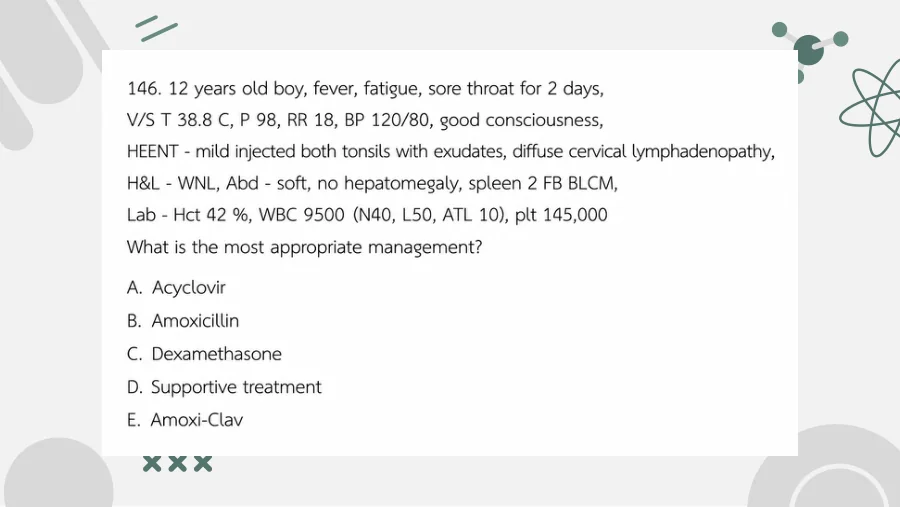
crop
ยังไม่ถูก
A. Acyclovir
ยังไม่ถูก
B. Amoxicillin
ยังไม่ถูก
C. Dexamethasone
ถูกต้อง
EBV infectious mononucleosis with atypical lymphocytes and splenomegaly is treated supportively.
Traumatic tympanic membrane perforation with discharge should avoid ototoxic drops; topical fluoroquinolone is safe.
A06-0028A06-Q0085solution_ready
130. 10 years boy, high grade fever, sore throat, breath difficultly, drooling, poor vaccine history record but generally healthy, no PH medication used, V/S T39 R22 P120 BP110/80 SpO2 94% RA, insist to upright position HEENT: not injected pharynx, lungs: equal BS, high pitched inspiratory stridor Most likely patho
A H influenza virus B Group A streptococcus C H influenza type B D RSV E mixed aerobe and anaerobe organism
Drooling, tripod/upright posture, toxic appearance, and stridor indicate epiglottitis classically due to Hib.
A06-0029A06-Q0087solution_ready
11. Female 48 year old present with dizziness for 1 day after history of nasal congestion and rhinorrhea 1 wk ago. In this morning she woke up with severe dizziness, increased with head motion and resolved after rest. PE: horizontal nystagmus to right and otherwise is WNL. What is the most likely diagnosis?
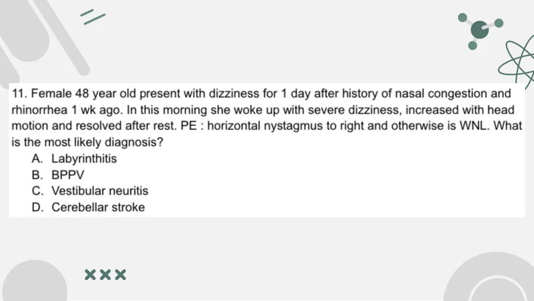
crop
ยังไม่ถูก
A. Labyrinthitis
ยังไม่ถูก
B. BPPV
ถูกต้อง
Post-URI acute vertigo with horizontal nystagmus and no hearing loss is vestibular neuritis.
Post-URI acute vertigo with horizontal nystagmus and no hearing loss is vestibular neuritis.
A06-0030A06-Q0090solution_ready
12. A 17-year-old male present with left ear pain with recent history of URI. The otoscopy is shown in the picture below. What is the most likely diagnosis?
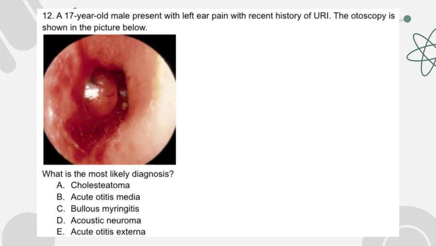
crop
ยังไม่ถูก
A. Cholesteatoma
ยังไม่ถูก
B. Acute otitis media
ถูกต้อง
The reviewed otoscopy image shows a bullous lesion on an inflamed tympanic membrane after URI with otalgia.
The reviewed otoscopy image shows a bullous lesion on an inflamed tympanic membrane after URI with otalgia.
A06-0031A06-Q0092solution_ready
129. 3yr boy present with unilateral foul smell rhinorrhea PE: BT37 HR112 RR20 BP90/60 HEENT: pus from right nose plain film shown battery in right nasal cavity ถาม most appropriate mx?
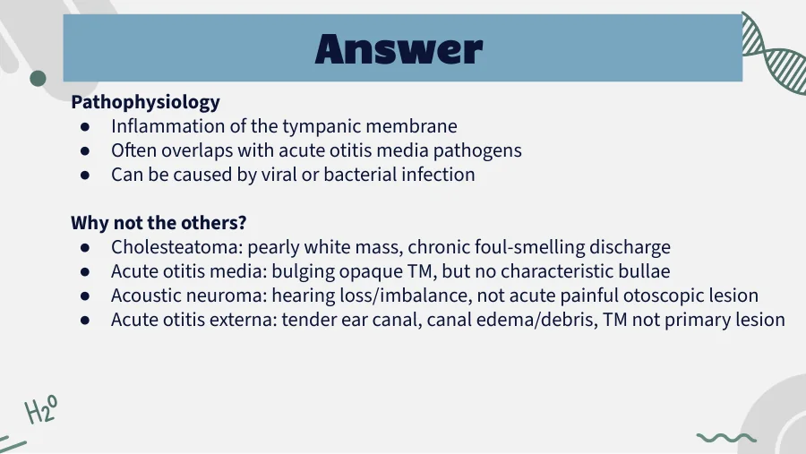
crop
ยังไม่ถูก
A. Nasal irrigation
ยังไม่ถูก
B. CT scan nasal sinus
ถูกต้อง
A nasal button battery requires urgent removal; irrigation should be avoided.
A nasal button battery requires urgent removal; irrigation should be avoided.
A06-0033A06-Q0096solution_ready
11. A 20 year old male, a swimmer present with pruritus with pain at periauricular for 2 days, 1 day ago he used cotton bud to decongested his ears. His physical examination reveals BT 37 PR 80 RR 20 O2sat 97 otoscopic exam reveals perforated tympanic membrane without swelling or erythematous or discharge. What is the proper management?
12. A 60 year old female, present with bleeding fresh blood per nose. Her vital signs are BT 36.5 PR 120 RR 22 BP 170/110, SpO2 98%. After direct pressure at nose for 15 mins fresh blood still oozing per nose. What is the best management?
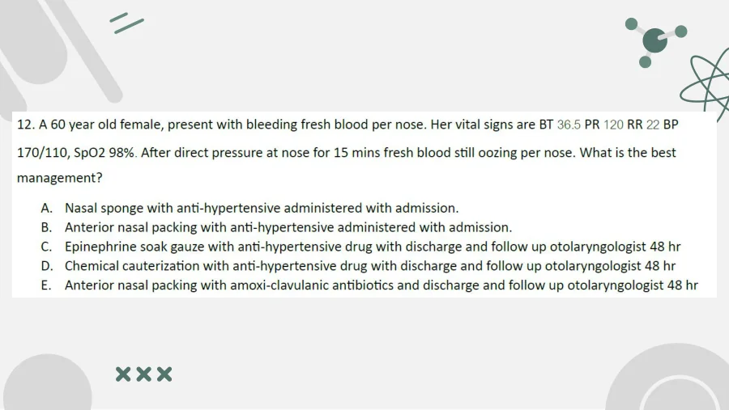
crop
ยังไม่ถูก
A. Nasal sponge with anti-hypertensive administered with admission.
ถูกต้อง
Persistent bleeding after compression with tachycardia and severe hypertension warrants anterior packing and monitored management.
ยังไม่ถูก
C. Epinephrine soak gauze with anti-hypertensive drug with discharge and follow up otolaryngologist 48 hr
ยังไม่ถูก
D. Chemical cauterization with anti-hypertensive drug with discharge and follow up otolaryngologist 48 hr
ยังไม่ถูก
E. Anterior nasal packing with amoxi-clavulanic antibiotics and discharge and follow up otolaryngologist 48 hr
Penetrating globe injury should not have the object removed in the ED; give systemic antibiotics, protect the eye, and consult ophthalmology.
A06-0039A06-Q0118solution_ready
150. A 50-year-old woman presents to the ED with a history of right-eye swelling and double vision. On examination, she is afebrile. Her right eye is proptotic, swollen, and red. Range of motion of right eye is limited all direction. Facial sensation also decreases above right cheek.
What is the anatomical defect in this condition?
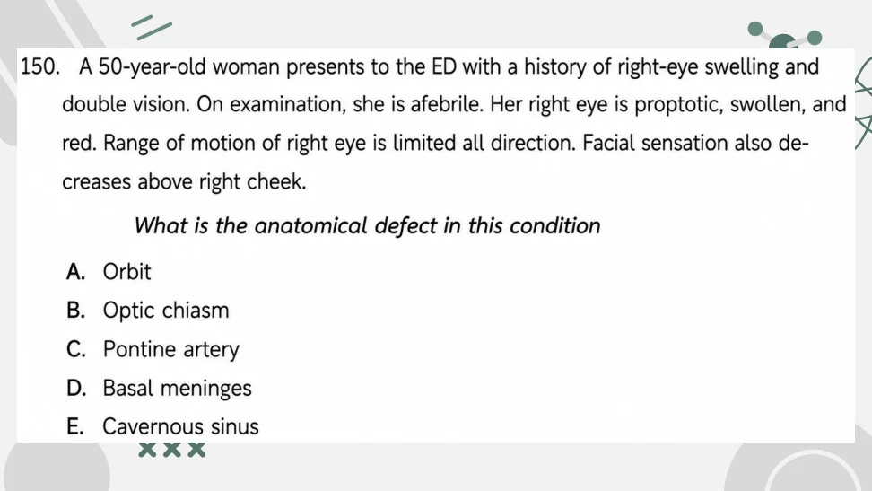
crop
ยังไม่ถูก
A. Orbit
ยังไม่ถูก
B. Optic chiasm
ยังไม่ถูก
C. Pontine artery
ยังไม่ถูก
D. Basal meninges
ถูกต้อง
Proptosis, ophthalmoplegia, red swollen eye, and decreased facial sensation point to cavernous sinus pathology.
Proptosis, ophthalmoplegia, red swollen eye, and decreased facial sensation point to cavernous sinus pathology.
A06-0040A06-Q0121solution_ready
179. A 17-year-old female fell asleep with her contact lenses in her eyes last evening. This morning she notes quite a bit of eye pain and photophobia. You evert the eyelids and find no evidence of a foreign body. When you stain her eye, you find a corneal ulcer. In addition to topical antibiotics and referral to ophthalmology.
Which of the following is the other drug you would choose for this patient prior to referral?
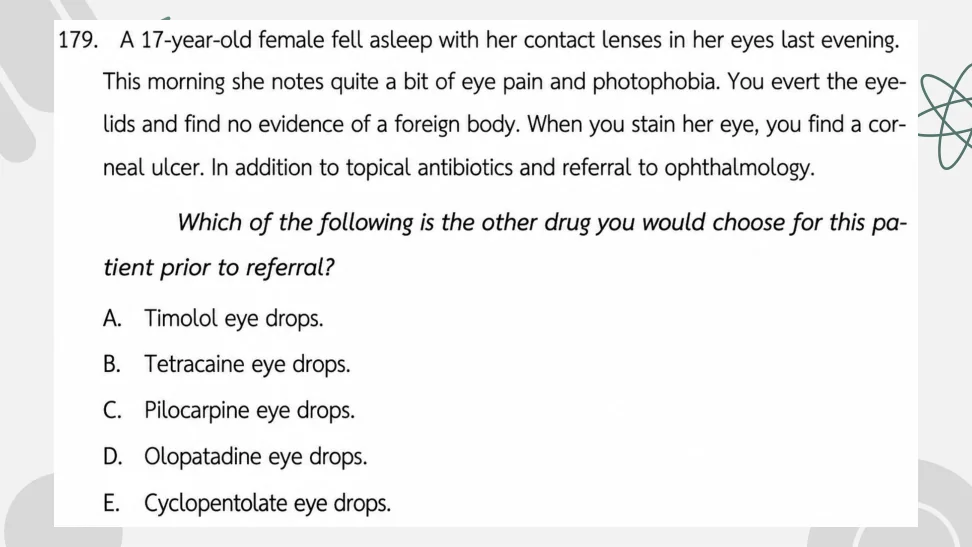
crop
ยังไม่ถูก
A. Timolol eye drops.
ยังไม่ถูก
B. Tetracaine eye drops.
ยังไม่ถูก
C. Pilocarpine eye drops.
ยังไม่ถูก
D. Olopatadine eye drops.
ถูกต้อง
Corneal ulcer treatment includes antibiotics and ophthalmology referral; cycloplegia helps pain from ciliary spasm.
Corneal ulcer treatment includes antibiotics and ophthalmology referral; cycloplegia helps pain from ciliary spasm.
A06-0041A06-Q0126solution_ready
32. ผู้ป่วยหญิงอายุ 50 ปี underlying DM, hypertension, dyslipidemia มาด้วยอาการตาพร่ามัวลงทันทีๆ 1 วัน ไม่มีไข้ ไม่ปวด ไม่แสบหรือเคืองตา ไม่มี trauma ตรวจร่างกาย VA right 20/200, left 20/40 Right eye examination reveal no abnormal external lesion, presence of relative afferent pupillary reflex, the fundus show diffuse retinal hemorrhage, macular edema and optic disc edema. Left eye examination was normal
จงให้การวินิจฉัยโรคของผู้ป่วยรายนี้
crop
ยังไม่ถูก
A. Optic neuritis
ยังไม่ถูก
B. Acute angle-closure glaucoma
ยังไม่ถูก
C. Central retinal artery occlusion
ถูกต้อง
Painless visual loss with diffuse retinal hemorrhages, macular edema, and optic disc edema is CRVO.
Painless visual loss with diffuse retinal hemorrhages, macular edema, and optic disc edema is CRVO.
A06-0042A06-Q0130solution_ready
33. A 70-year-old female with a history of well-controlled, mild hypertension presents to the ED with a chief complaint of abrupt episode of flashes of light and floaters in her left eye. She states that she was watching television when she experienced a brief episode in which many glittery lights flashed in her left eye. The episode resolved, but she has subsequently noted a couple gray spots floating in her vision. She denies decreased visual acuity. Direct ophthalmoscopy is unrevealing. Which of the following is the most likely cause of her symptoms?
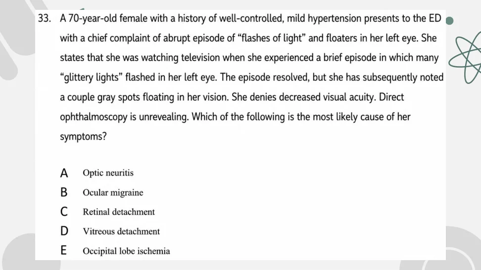
crop
ยังไม่ถูก
A. Optic neuritis
ยังไม่ถูก
B. Ocular migraine
ยังไม่ถูก
C. Retinal detachment
ถูกต้อง
Flashes and floaters in an older patient with preserved acuity and unrevealing direct ophthalmoscopy most often reflect posterior vitreous detachment.
Acute angle-closure glaucoma in a sulfa-allergic patient should avoid acetazolamide; timolol plus mannitol lowers IOP.
A06-0044A06-Q0137solution_ready
153. A 6-week-old child arrives with a complaint of breathing fast and a cough. On examination you note the child to have no temperature elevation, a respiratory rate of 65 breaths per minutes, and her oxygen saturation to be 94%. Physical examination also is significant for rales and rhonchi. The past medical history for the child is positive for an eye discharge at 3 weeks of age, which was treated with a topical antibiotic drug. Which of the following organism is the most likely cause of this child condition?
crop
ยังไม่ถูก
A. Herpes virus
ยังไม่ถูก
B. Neisseria gonorrhea
ยังไม่ถูก
C. Staphylococcus aureus
ถูกต้อง
Afebrile pneumonia at 6 weeks with prior neonatal conjunctivitis is classic for Chlamydia trachomatis.
Afebrile pneumonia at 6 weeks with prior neonatal conjunctivitis is classic for Chlamydia trachomatis.
A06-0045A06-Q0141solution_ready
33. A 70-year-old woman with type 2 DM, HT, AF presents with acute painless visual loss in her left eye for 10 minutes. Her visual acuity is markedly decrease and she has a striking afferent pupillary defect. She also has a left-sided carotid bruit.
Which of the following is the most approximate next step in management?
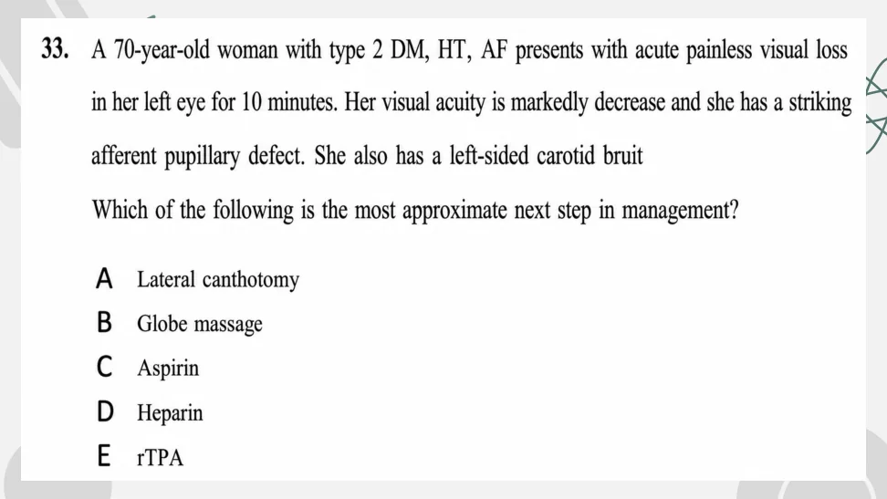
crop
ยังไม่ถูก
A. Lateral canthotomy
ถูกต้อง
Acute CRAO/amaurosis presentation within minutes can receive immediate ocular massage while urgent stroke/ophthalmology care proceeds.
Acute CRAO/amaurosis presentation within minutes can receive immediate ocular massage while urgent stroke/ophthalmology care proceeds.
A06-0046A06-Q0145solution_ready
48. A 32-year-old man presents with eye pain and redness. Slit lamp examination is shown in picture. Which of the following is the most appropriate next step in management?
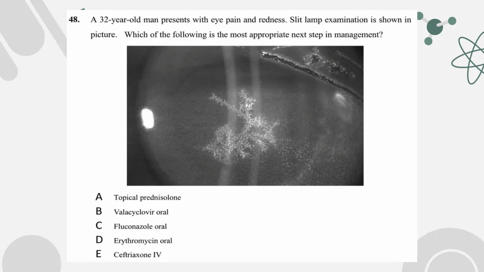
crop
ยังไม่ถูก
A. Topical prednisolone
ถูกต้อง
The reviewed slit-lamp image shows a branching dendritic corneal lesion, consistent with HSV epithelial keratitis; oral valacyclovir is the listed antiviral option.
The reviewed slit-lamp image shows a branching dendritic corneal lesion, consistent with HSV epithelial keratitis; oral valacyclovir is the listed antiviral option.
A06-0047A06-Q0149solution_ready
107. A 25-year-old man who has suffered blunt trauma to his head has a suspected injury to his superior rectus muscle. What eye movements might be compromised if this indeed were the case?
crop
ยังไม่ถูก
A. Abduction only
ยังไม่ถูก
B. Abduction and elevation
ยังไม่ถูก
C. Adduction and depression
ถูกต้อง
Superior rectus primarily elevates the eye and also contributes to adduction/intorsion.
Neonatal conjunctivitis around day 10 is most consistent with Chlamydia.
A06-0055A06-Q0168solution_ready
7. Male patient 55 years old no previous underlying disease present in ED with right eye visual loss 6 hours ago, he denied pain and history of trauma and never experienced this symptoms before V/S PR100 BT36.5 BP180/100 SpO2 98% His external eyes look normal, fundoscopic examination of his right eye review pale retina and normal macular area, What is the proper management
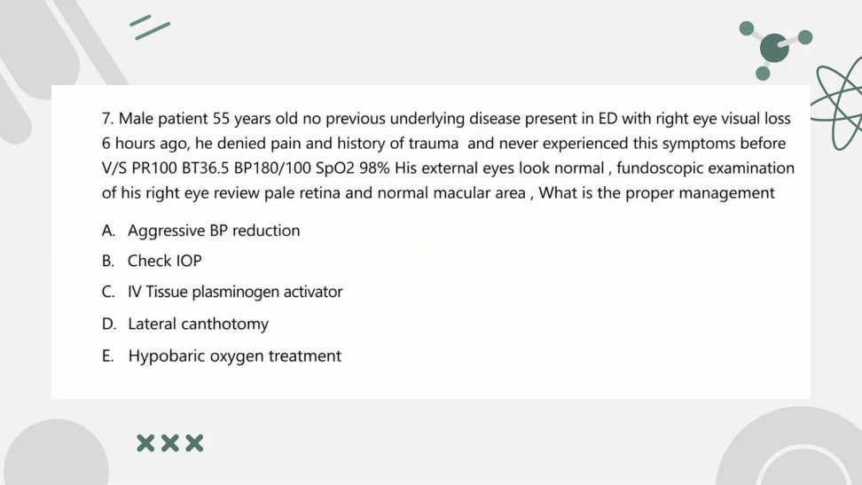
crop
ยังไม่ถูก
A. Aggressive BP reduction
ยังไม่ถูก
B. Check IOP
ยังไม่ถูก
C. IV Tissue plasminogen activator
ยังไม่ถูก
D. Lateral canthotomy
ถูกต้อง
CRAO with pale retina and acute painless vision loss can be considered for urgent oxygen-based therapy when listed.
Fever/URI with painful eye symptoms and exophthalmos most strongly suggests orbital cellulitis; among the listed choices, the intended infection answer is option A, although the option wording appears to say preorbital rather than orbital.
Fever/URI with painful eye symptoms and exophthalmos most strongly suggests orbital cellulitis; among the listed choices, the intended infection answer is option A, although the option wording appears to say preorbital rather than orbital.
A06-0060A06-Q0182solution_ready
9. A 20-year-old female present with right eye pain. She always wears contact lens and sometimes sleeps with them. What is the most appropriate management?
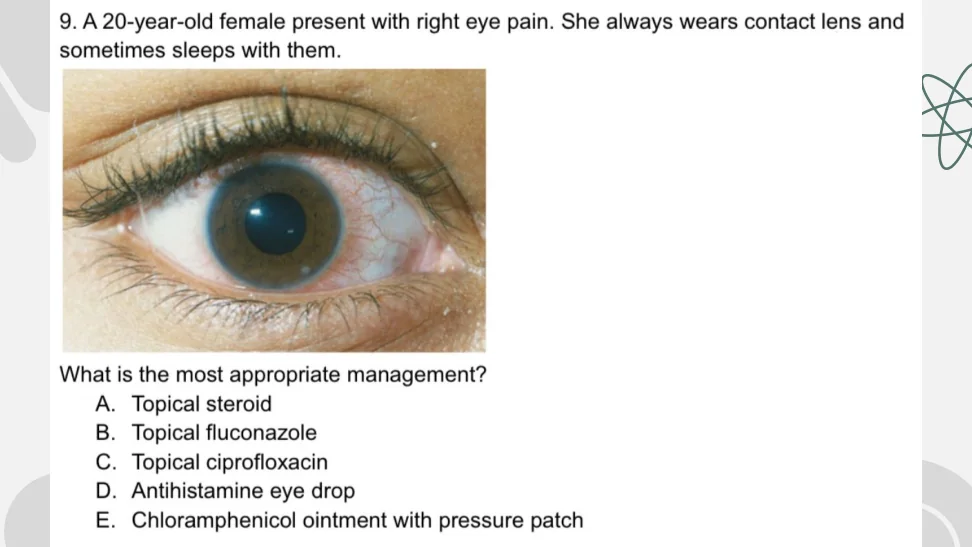
crop
ยังไม่ถูก
A. Topical steroid
ยังไม่ถูก
B. Topical fluconazole
ถูกต้อง
Contact-lens related eye pain/keratitis requires topical fluoroquinolone anti-pseudomonal coverage.
Contact-lens related eye pain/keratitis requires topical fluoroquinolone anti-pseudomonal coverage.
A06-0061A06-Q0184solution_ready
10. A 27-year-old female patient with painful, watery, injected Rt eye. On examination VA was normal, ciliary flush around cornea. She refuses to light reflex test due to pain. Slit lamp found cells and flare. What is the proper treatment?
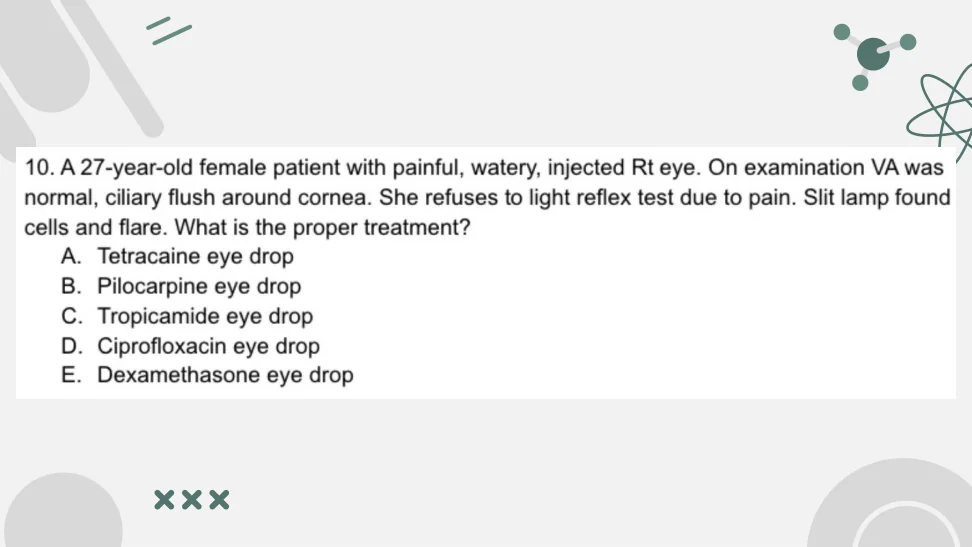
crop
ยังไม่ถูก
A. Tetracaine eye drop
ยังไม่ถูก
B. Pilocarpine eye drop
ถูกต้อง
Anterior uveitis with cells/flare is treated with cycloplegic drops plus ophthalmology-directed anti-inflammatory therapy.
Anterior uveitis with cells/flare is treated with cycloplegic drops plus ophthalmology-directed anti-inflammatory therapy.
A06-0062A06-Q0187solution_ready
8. A female 35-year-old come to ED with right-sided eye red for 3 days. She had no pain but had watery discharge. She also had cough and congested for 5 days. On physical examination, vital signs stable, no fever, erythema conjunctival right eye with clear watery discharge, enlarge tonsils without exudate. VA 20/20, normal slit lamp and fundoscopic examination. What is the diagnosis?
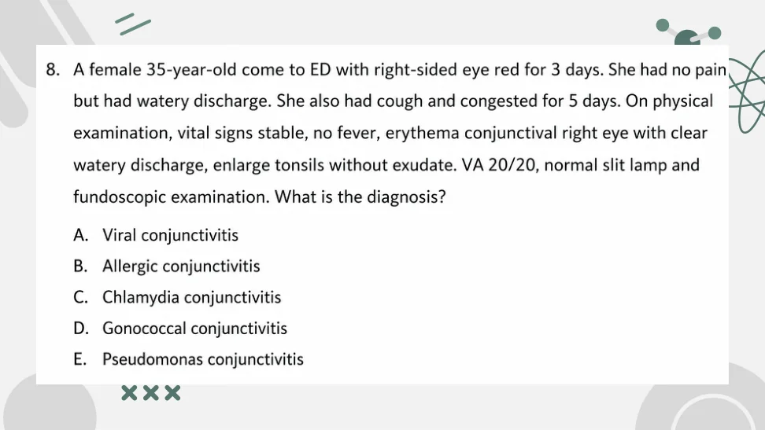
crop
ถูกต้อง
Watery discharge with URI symptoms and normal vision/slit lamp is viral conjunctivitis.
Watery discharge with URI symptoms and normal vision/slit lamp is viral conjunctivitis.
A06-0063A06-Q0189solution_ready
9. Female 34 yr. was hit by tennis ball presented with left eye pain. PE: right eye normal, left eye proptosis, decrease VA, limit EOM, IOP 45 mmHg. Which of the following appropriate management?
crop
ยังไม่ถูก
A. mannitol
ยังไม่ถูก
B. atropine ED
ยังไม่ถูก
C. eye shield
ถูกต้อง
Orbital compartment syndrome after blunt trauma requires emergent lateral canthotomy/cantholysis.
Recurrent URI/GI infections with neurologic/eye findings points to ataxia-telangiectasia; the listed matching option is telangiectasia.
A06-0067A06-Q0198solution_ready
129. 5 days old infant, present with bilateral injected conjunctiva with marked chemosis and mucopurulent discharge, Prophylaxis erythromycin was given in the nursery, mother said she was find and well feeding with breastfeeding
What the organism in gram stain [MCQ 64]
A: GN diplococci B: GN Coccobacilli C: GP cocci in cluster D: Negative Gram stain with few WBC E: Negative Gram stain with Dendrite on fluorescent
For neonatal purulent conjunctivitis in the ED, Gram stain of eye discharge is the most immediately useful test for gonococcus.
A06-0071A06-Q0202solution_ready
A 7-year-old boy presented with severe ear pain and itching after swimming 1 day. PE showed diffuse redness and swelling at right ear pinna, tenderness at targus, marked swelling at right ear canal with purulent discharge. What is the most appropriate management? [MCQ 61]
p11
ยังไม่ถูก
A. Cloxacillin syrup
ยังไม่ถูก
B. Amoxicillin syrup
ยังไม่ถูก
C. Neomycin ear drop
ถูกต้อง
Swimmer with tragal tenderness, swollen canal, and purulent discharge has otitis externa; topical fluoroquinolone is appropriate.
Swimmer with tragal tenderness, swollen canal, and purulent discharge has otitis externa; topical fluoroquinolone is appropriate.
A06-0072A06-Q0203solution_ready
A 2-month-old girl presented with excessive tearing from both eyes for 1 day. Her mother noticed that her baby also could not tolerate to light. Physical examination revealed BT 37, RR 32, HR 124, eye no conjunctival injection, corneal diameter 15 mm both eyes, horizontal curvilinear break line at both cornea with cloudiness. What is the most likely diagnosis? [MCQ 61]
A 12-month-old with acute otitis media is treated first-line with high-dose amoxicillin unless recent exposure or allergy changes selection.
A06-0074A06-Q0205solution_ready
A 6-year-old boy presented with left ear pain for 2 days. He was deaf and received cochlear implant for 1 months. He had no headache, ear discharge or hearing loss. Physical examination: BT 38 C, left tympanic membrane - erythema without perforation, no effusion was found. What is the most appropriate management?
p16
ยังไม่ถูก
A. Oral ibuprofen
ยังไม่ถูก
B. Oral amoxicillin
ยังไม่ถูก
C. Ofloxacin ear drop
ถูกต้อง
AOM soon after cochlear implantation has higher invasive infection risk and warrants parenteral ceftriaxone/urgent ENT follow-up.
The reviewed teaching slide for this exact item has amoxicillin circled. The adjacent reference note says non-toxic otitis media more than 2 months after cochlear implant surgery can be treated with oral antibiotics.
Palpable purpura, abdominal pain, arthralgia, and renal findings indicate IgA vasculitis.
A06-0079A06-Q0210solution_ready
A 12-year-old woman presented with airway obstruction secondary to laryngeal swelling. Her history was significant for episodes of recurrent facial swelling. The swelling, which often involved the lips, began suddenly without recognizable precipitating events and lasts for 2 to 3 days. What is the most useful investigation?
p31
ยังไม่ถูก
A. IgG level
ยังไม่ถูก
B. B-cell count
ยังไม่ถูก
C. T-cell count
ยังไม่ถูก
D. Nitroblue tetrazolium test
ถูกต้อง
Recurrent angioedema with airway swelling suggests hereditary angioedema; C4 is the useful screening test.
Recurrent angioedema with airway swelling suggests hereditary angioedema; C4 is the useful screening test.
A06-0080A06-Q0211solution_ready
Sugerglue contact eye Case male 45 yr LW at Rt forehead due to body-assault at pub, then he use the hot glue to stop bleeding. At ER bleeding is stop, But he's complaint cant open his eye What's the appropriate management?
crop
ยังไม่ถูก
A. apply Acetone
ยังไม่ถูก
B. apply Cold water
ยังไม่ถูก
C. NSS irrigate pH 7-7.5
ยังไม่ถูก
D. Forcep remove
ถูกต้อง
Cyanoacrylate eyelid adhesion is softened with ointment and gently separated; acetone should be avoided near the eye.
Stable trapped patient with neck pain should be immobilized for controlled extrication, such as with a Kendrick extrication device.
A06-0084A06-Q0215solution_ready
มีอาการ uri 2-3 เวียนศีรษะ rinne air > bone weber หูขวา
crop
ถูกต้อง
The reviewed source page shows the complete vestibular choices; several days of vertigo after URI with auditory symptoms fits labyrinthitis better than BPPV or cerebellar stroke.
The reviewed source page shows the complete vestibular choices; several days of vertigo after URI with auditory symptoms fits labyrinthitis better than BPPV or cerebellar stroke.
A06-0085A06-Q0216solution_ready
ปวดหู มีน้ำไหล ไข้ ตรวจร่างกาย facial nerve palsy, foul smell d/c, erythema at tragus and preairicular ถาม dx
crop
ยังไม่ถูก
A. Facial nerve palsy
ถูกต้อง
Otorrhea, severe ear pain, foul discharge, peri-auricular inflammation, and facial nerve palsy suggest malignant otitis externa.
Posterior vitreous detachment (PVD). Exact original option letter is unavailable because PVD is not visible among the listed choices.
Rationale
Single new floater with normal visual acuity, no pain, and no trauma is most consistent with posterior vitreous detachment. Retinal detachment remains the dangerous diagnosis to exclude, but the stem lacks curtain/field defect, progressive photopsia, or vision loss; CRAO/CRVO would usually present with acute visual loss, and uveitis would usually have pain/redness/photophobia. The visible choices omit PVD, so this is locked as the content diagnosis with the missing original option noted.
LR+ is sensitivity/(1-specificity) = 0.70/0.10 = 7; pretest odds 95/5 becomes 133:1, or about 99.2%.
A06-0098A06-Q0229solution_ready
175. เด็ก 4 ขวบเป็น severe croup. PE: inspiratory stridor, subcostal retraction, accessory muscle use, SpO2 75% -> พ่น adrenaline, ฉีด dexa IM แล้ว HR 155, BP90/45, RR45, SpO2 88% on oxygen supplement สักอย่างหนึ่ง What is the next appropriate management?
crop
ยังไม่ถูก
A. Needle cricothyroidotomy
ยังไม่ถูก
B. Surgical cricothyroidotomy
ยังไม่ถูก
C. Awake fibreoptic intubation
ถูกต้อง
Severe croup with persistent hypoxemia after epinephrine/steroid needs controlled airway management, ideally inhalational induction with expert support.
Severe croup with persistent hypoxemia after epinephrine/steroid needs controlled airway management, ideally inhalational induction with expert support.
A06-0099A06-Q0230solution_ready
191. Thai boy 10 yo swimming in lake then ear pain both side PE swelling both ear canal seen whitish discharge tympanic membrane with in normal limit Most appropriate treatment
crop
ยังไม่ถูก
A. Para pain control
ยังไม่ถูก
B. Amoxycillin
ยังไม่ถูก
C. Clindamycin ear drop
ถูกต้อง
Otitis externa after swimming is treated with topical fluoroquinolone with steroid when listed.
Otitis externa after swimming is treated with topical fluoroquinolone with steroid when listed.
A06-0102A06-Q0233solution_ready
15. ชาย 72 ปี. U/D: DM, HT, and gout presented with sudden vertigo + hoarseness. PE: V/S stable bo ไม่สูง ptosis left eye, numbness left side of face, paresis soft palate and tongue, paresthesia right extremities. What is the most likely diagnosis?
crop
ยังไม่ถูก
A. Perilymph fistula
ยังไม่ถูก
B. Multiple sclerosis
ยังไม่ถูก
C. Cerebellar stroke
ถูกต้อง
Vertigo, hoarseness, ipsilateral facial sensory loss/ptosis, palate involvement, and contralateral body symptoms localize lateral medulla.
A duplicate teaching slide for the same failed-awake-intubation stridor item marks conscious sedation with fiberoptic intubation as the intended answer; this also matches the epiglottitis airway principle of maintaining spontaneous ventilation when possible.
ยังไม่ถูก
D. LMA
Source: Test stridor.pdf | Page/slot: 1 | Marker: Q1
Reference: Source: Test stridor.pdf | Page/slot: 1 | Marker: Q1
ซ่อนเฉลยเปิดเฉลยSolution readyA06-0107 answer
Answer
C. Conscious sedation with fiberoptic intubation
Rationale
A duplicate teaching slide for the same failed-awake-intubation stridor item marks conscious sedation with fiberoptic intubation as the intended answer; this also matches the epiglottitis airway principle of maintaining spontaneous ventilation when possible.
A06-0108A06-Q0239solution_ready
5 years old boy fever with cough for 1 day sitting in tripod position. Severe RS distress. Attending physician tried ETT 3 attempts failed, patient collapse weak pulse O2sat65 on O2mask c bag10LPM. What most appropriate next step management
1. LMA 2. FOL 3. Needle cricothyroidotomy 4. Surgical cricothyroidotomy 5. Small size uncuffed ETT
crop
Source: Test stridor.pdf | Page/slot: 2 | Marker: Q2
Reference: Source: Test stridor.pdf | Page/slot: 2 | Marker: Q2
ซ่อนเฉลยเปิดเฉลยSolution readyA06-0108 answer
Answer
3. Needle cricothyroidotomy
Rationale
In a young child with failed intubation and cannot oxygenate, needle cricothyrotomy is preferred over surgical cricothyrotomy.
A06-0109A06-Q0240solution_ready
เด็กชาย 9 ปี โดนชกที่คอ v/s HR 90, RR20, BP 89/60 เสียงแหบ คอไม่บวม ไม่มีแผล ถามว่า The most appropiated management
crop
ยังไม่ถูก
A. CT neck
ยังไม่ถูก
B. Bronchoscope
ยังไม่ถูก
C. Esophagogram
ยังไม่ถูก
D. Panendoscope
ถูกต้อง
Stable blunt laryngeal trauma with hoarseness is evaluated with flexible fiberoptic laryngoscopy.
Source: Test stridor.pdf | Page/slot: 3 | Marker: Q3
Reference: Source: Test stridor.pdf | Page/slot: 3 | Marker: Q3
ซ่อนเฉลยเปิดเฉลยSolution readyA06-0109 answer
Answer
E. Flexible fiberoptic laryngoscope
Rationale
Stable blunt laryngeal trauma with hoarseness is evaluated with flexible fiberoptic laryngoscopy.
A06-0111A06-Q0242solution_ready
5 year old boy presents with fever with dyspnea เด็กดูดี BT 38.5 RR 32 Spo2 96% PE: hoarse cough nasal flaring, inspiratory stridor มี retraction ถาม most approated mx:
crop
ยังไม่ถูก
A. Oral pred
ยังไม่ถูก
B. iv dexamethasone
ยังไม่ถูก
C. พ่น ventolin
ถูกต้อง
Croup with stridor at rest and retractions needs nebulized epinephrine plus steroid.
ยังไม่ถูก
E. NSS suction
Source: Test stridor.pdf | Page/slot: 5 | Marker: Q5
Reference: Source: Test stridor.pdf | Page/slot: 5 | Marker: Q5
ซ่อนเฉลยเปิดเฉลยSolution readyA06-0111 answer
Answer
D. Nebulized epinephrine
Rationale
Croup with stridor at rest and retractions needs nebulized epinephrine plus steroid.
A06-0112A06-Q0243solution_ready
เด็ก 3 ปี มาด้วยไอ barking cough หายใจมี substernal and subcostal retraction, inspiratory rhonchi O2sat drop try ett ไม่สามารถใส่ได้ ถาม next proper management
The reviewed source crop for the croup/failed ETT item has needle cricothyroidotomy marked, consistent with rescue oxygenation when intubation fails and oxygen saturation is dropping.
A06-0115A06-Q0246solution_ready
1. ผู้ป่วย Dx pneumonia with respiratory failure Mx RSI with intubation แล้วได้ capnography มาดังภาพ ถาม next step management.
crop
ยังไม่ถูก
A. Prepare for CPR
ยังไม่ถูก
B. Suction
ยังไม่ถูก
C. Test cuff leak
ถูกต้อง
The reviewed capnogram has a shark-fin obstructive contour after intubation, so ventilator management should allow longer expiration.
The reviewed waveform and source annotation indicate air trapping/auto-PEEP; increasing expiratory time is the listed management.
A06-0117A06-Q0248solution_ready
3. ผู้ป่วยชายอายุ 67 ปี U/D: COPD with AE with respiratory failure. On ETT: PCV mode Pi 15, Ti 0.9, RR 18, PEEP 5, FiO2 0.3. หลัง on ETT เหนื่อยมากขึ้น ให้กราฟ ventilator ถาม management.
crop
ยังไม่ถูก
A. Load NSS 1 L
ถูกต้อง
The reviewed source annotation supports double triggering. A duplicate source item in B-0022 explicitly gives ventilator double triggering management as increasing inspiratory time, which corresponds best to option B here.
ยังไม่ถูก
C. Increase IP
ยังไม่ถูก
D. Sedate with paralytic
ถูกต้อง
The reviewed source annotation supports double triggering. A duplicate source item in B-0022 explicitly gives ventilator double triggering management as increasing inspiratory time, which corresponds best to option B here.
The reviewed source annotation supports double triggering. A duplicate source item in B-0022 explicitly gives ventilator double triggering management as increasing inspiratory time, which corresponds best to option B here.
A06-0118A06-Q0249solution_ready
4. EMS ออกรับผู้ป่วยชาย U/D: COPD มีอาการหายใจหอบเหนื่อย พ่นยาไปแล้วอาการไม่ดีขึ้น แพทย์ใส่ ETT ร่วมกับพ่นยาแล้ว BP drop ให้รูปมา ถาม Mx.
crop
ยังไม่ถูก
A. พ่นยาต่อ
ถูกต้อง
Intubated obstructive lung disease with sudden BP drop after ventilation suggests dynamic hyperinflation; disconnect to release trapped air.
The reviewed source crop states the intended answer: give pain medication and follow up, without antibiotics.
A06-0132A06-Q0263solution_ready
25. ชาย 65 ปี HT DLP AFHe usually missing occasional dose of warfarin present with sudden visual loss right eye RAPD +ve fundoscopy : cherry red spot with pale eyeground, CT brain not seen ICH or infarct A ASA B Eye rubbing C Thrombolytic D HBOT
The reviewed source crop shows acute CRAO findings with CT brain excluding hemorrhage/infarct and lists thrombolytic as the intended acute-treatment option.
A06-0133A06-Q0264solution_ready
26. ชาย 32 ปี อุบัติเหตุรถชน หลังเกิดอุบัติเหตุตามองไม่เห็นทันที PE: proptosis IOP 35 mmHg CT reprobulbar hematoma next management A acetazolamide B lateral canthotomy C consult eye
For RSI in a compromised airway with stable hemodynamics, etomidate plus rapid-onset rocuronium is the best listed combination.
A06-0139A06-Q0270solution_ready
185. Male child 4 yr complete vaccination presented with fever, dyspnea, barking cough with previous URI symptoms. V/S stable SpO2 98% RA other PE shows inspiratory stridor, subcostal retractions with mild distress. Lung no rhonchi/wheezing, good capillary refill time. Initial Dexa 0.6 mg/kg and epinephrine nebulized were given. After initial treatment patient has no distress, no stridor heard, clearly improved. Next step Mx? 1. D/C 2. Oral prednisolone course 3. Admit observe 4. Observe 4 hr then D/C if stable 5. จําไม่ได้
Toxic tripod child with drooling, stridor, and muffled voice has epiglottitis; controlled OR intubation is the safest initial airway plan.
A06-0141A06-Q0272solution_ready
191. thai boy 10 yo swimming in lake then ear pain both side PE swelling both ear canal seen whitish discharge tympanic membrane with in normal limit Most appropiate treatment 1 para pain control 2 Amoxycillin 3 clindamycin ear drop 4 ciprofloxacin ear drop and dexamethasone ear drop